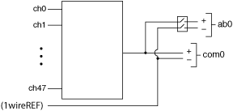
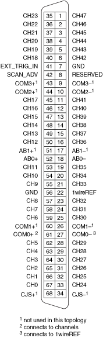

将 NI PXI-2501/2503 用作1 线48×1多路复用器时，请使用 NI TB-2605 接线端子连接您的信号。下图是该模式下 NI PXI-2501/2503 的示意图。
|  |
在 1-wire 模式下，所有通道都可以连接到 COM0+。COM0– 始终连接到 1_WIRE_LO_REF，并且可以选择用于通过开关路由不同信号的第二条线（例如，DMM 的 LO 端子）。
在扫描期间，示例扫描列表条目是ch2->com0；. 此条目将连接到 ch2 的信号路由到 COM0+。
在使用ch2和com0调用niSwitch Connect Channels VI 或niSwitch_Connect函数的即时操作期间，连接到 ch2 的信号被路由到 COM0+。要将信号路由到 AB0，请使用 niSwitch Connect Channels VI 或带有com0和ab0的niSwitch_Connect函数。
下图和表格标识了 1 线 48×1 多路复用器拓扑中 NI PXI-2501/2503 的引脚。

|
注意 不要连接到 RESERVED 引脚。 |
| 软件名称 | 硬件名称 | |
|---|---|---|
| NI PXI-2501/2503 连接器引脚编号 |
NI TB-2605 终端名称 |
|
| ch0 | 67 | CH0 |
| ch1 | 66 | CH1 |
| ch2 | 65 | CH2 |
| ch3 | 64 | CH3 |
| ch4 | 63 | CH4 |
| ch5 | 62 | CH5 |
| ch6 | 59 | CH6 |
| ch7 | 58 | CH7 |
| ch8 | 57 | CH8 |
| ch9 | 55 | CH9 |
| ch10 | 54 | CH10 |
| ch11 | 53 | CH11 |
| ch12 | 50 | CH12 |
| ch13 | 49 | CH13 |
| ch14 | 48 | CH14 |
| sh15 | 47 | CH15 |
| ch16 | 46 | CH16 |
| ch17 | 45 | CH17 |
| ch18 | 40 | CH18 |
| ch19 | 39 | CH19 |
| ch20 | 38 | CH20 |
| ch21 | 37 | CH21 |
| ch22 | 36 | CH22 |
| ch23 | 35 | CH23 |
| ch24 | 33 | CH24 |
| ch25 | 32 | CH25 |
| ch26 | 31 | CH26 |
| ch27 | 30 | CH27 |
| ch28 | 29 | CH28 |
| ch29 | 28 | CH29 |
| ch30 | 25 | CH30 |
| ch31 | 24 | CH31 |
| ch32 | 23 | CH32 |
| ch33 | 21 | CH33 |
| ch34 | 20 | CH34 |
| ch35 | 19 | CH35 |
| ch36 | 16 | CH36 |
| ch37 | 15 | CH37 |
| ch38 | 14 | CH38 |
| ch39 | 13 | CH39 |
| ch40 | 12 | CH40 |
| ch41 | 11 | CH41 |
| ch42 | 6 | CH42 |
| ch43 | 5 | CH43 |
| ch44 | 4 | CH44 |
| ch45 | 3 | CH45 |
| ch46 | 2 | CH46 |
| ch47 | 1 | CH47 |
| 1wire | 22 | 1 线参考 |
| com0 | 61 | COM0+ |
| 27 | COM0– | |
| ab0 | 52 | AB0+ |
| 18 | AB0– | |
| 无连接1 | 60 | COM1+ |
| 26 | COM1– | |
| 无连接1 | 44 | COM2+ |
| 10 | COM2– | |
| 无连接1 | 43 | COM3+ |
| 9 | COM3– | |
| 无连接1 | 51 | AB1+ |
| 17 | AB1– | |
| 1此拓扑中未使用 | ||
| NI PXI-2501/2503 连接器引脚编号 |
信号名称 |
|---|---|
| 7, 56 | GND接地 |
| 41 | TRIG IN触发 |
| 42 | SCANADV |
| 8 | RESERVED |
| 68 | CJS+ |
| 34 | CJS- |
 提交有关此主题的反馈。
提交有关此主题的反馈。 访问ni.com/support以获得技术支持。
访问ni.com/support以获得技术支持。